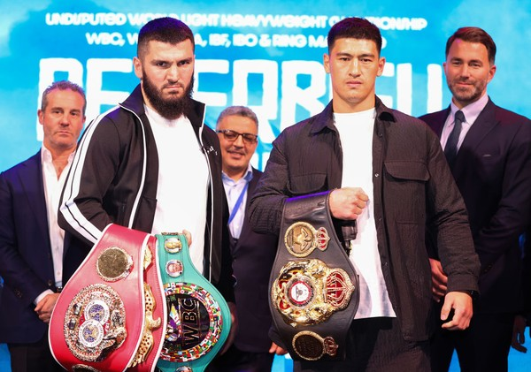
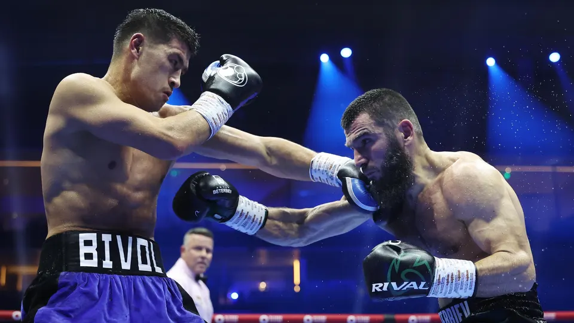

Latest News
Singkirkan Dmitry Bivol, Artur Beterbiev Raih 4 Sabuk Juara Kelas Berat Ringan
Hasil tinju dunia pada laga antara Artur Beterbiev vs Dmitry Bivol ditentukan lewat akumulasi skor per ronde dari juri yang bertugas, Minggu (13/10/2024) di Riyadh, Arab Saudi.
Artur Beterbiev mengamankan kemenangan lewat majority decision dari juri yang bertugas dalam hasil tinju dunia kali ini. Artur Beterbiev memenangkan pertandingan dengan skor 114-114, 115-113, dan 116-112. Dengan kemenangan ini, Artur Beterbiev sukses menggabungkan dan meraih empat sabuk juara di kelas berat ringan.
Petinju berjuluk Monster tersebut kini berhak menyandang sabuk juara kelas berat ringan versi WBA, WBC, WBO, dan IBF. Pada saat yang sama, ia menobatkan dirinya sebagai juara tak terbantahkan atau undisputed champion di kelas berat ringan.

Jadi Korban Keganasan Alex Pereira, Khalil Rountree Jr Bilang Begini Usai Kalah TKO di UFC 307
Seperti prediksi banyak orang, Alex Pereira rupanya masih terlalu kuat untuk Khalil Rountree Jr. Petarung peringkat kedelapan di kelas berat ringan itu berakhir tumbang di tangan Alex Pereira. Dalam duel yang berlangsung pada Minggu (6/10/2024) itu, Khalil dinyatakan kalah TKO lewat pukulan di ronde keempat.
Terkait hasil pertandingan tersebut, Khalil mengakui bahwa dirinya memang kalah tapi meski begitu ia mendapatkan pelajaran berharga. Berkat kekalahan itu, Khalil mendapatkan pembelajaran, pengalaman dan bisa bertumbuh lebih baik sebagai seorang petarung. "Saya tidak memenangkan gelarnya, tapi saya bertumbuh tadi malam," ungkap Khalil di media sosialnya.